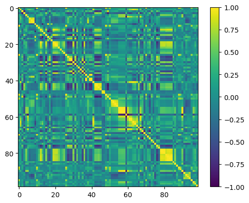

Code
import numpy as np
import pandas as pd
import ucimlrepo
import sympy as sp
import matplotlib.pyplot as pltimport numpy as np
import pandas as pd
import ucimlrepo
import sympy as sp
import matplotlib.pyplot as pltThe following is largely based on exercises in (Cohen 2022), an excellent overview of applied, numerical linear algebra in python. This exercise is an overview of how to compute the covariance matrix of a dataset, and contains enough fundamental linear algebra and statistics topics – matrix multiplication, the definitions of variance and covariance, etc. – that I wanted to commit it to a blog for my future reference.
The exercise dataset is “Communities and Crime,” from the UC Irvine Machine Learning Repository, which includes data on
Communities within the United States. The data combines socio-economic data from the 1990 US Census, law enforcement data from the 1990 US LEMAS survey, and crime data from the 1995 FBI UCR.
In the exercise, we are tasked with created a covariance matrix of the data.
# Fetch the dataset
communities_and_crime: ucimlrepo.dotdict = ucimlrepo.fetch_ucirepo(id=183)
df: pd.DataFrame = pd.concat([communities_and_crime.data.features,
communities_and_crime.data.features], axis=1)
# Isolate numerical features and clear duplicate columns
df_num: pd.DataFrame = df.copy().select_dtypes(include='number')
df_num = df_num.loc[:,~df_num.columns.duplicated()]
df_num = df_num.iloc[:, 2:]To make the operations as clear as possible, I’m going to overview the process using only the first five rows before computing the full covariance matrix.
example = df_num.head()
example| population | householdsize | racepctblack | racePctWhite | racePctAsian | racePctHisp | agePct12t21 | agePct12t29 | agePct16t24 | agePct65up | ... | NumStreet | PctForeignBorn | PctBornSameState | PctSameHouse85 | PctSameCity85 | PctSameState85 | LandArea | PopDens | PctUsePubTrans | LemasPctOfficDrugUn | |
|---|---|---|---|---|---|---|---|---|---|---|---|---|---|---|---|---|---|---|---|---|---|
| 0 | 0.19 | 0.33 | 0.02 | 0.90 | 0.12 | 0.17 | 0.34 | 0.47 | 0.29 | 0.32 | ... | 0.0 | 0.12 | 0.42 | 0.50 | 0.51 | 0.64 | 0.12 | 0.26 | 0.20 | 0.32 |
| 1 | 0.00 | 0.16 | 0.12 | 0.74 | 0.45 | 0.07 | 0.26 | 0.59 | 0.35 | 0.27 | ... | 0.0 | 0.21 | 0.50 | 0.34 | 0.60 | 0.52 | 0.02 | 0.12 | 0.45 | 0.00 |
| 2 | 0.00 | 0.42 | 0.49 | 0.56 | 0.17 | 0.04 | 0.39 | 0.47 | 0.28 | 0.32 | ... | 0.0 | 0.14 | 0.49 | 0.54 | 0.67 | 0.56 | 0.01 | 0.21 | 0.02 | 0.00 |
| 3 | 0.04 | 0.77 | 1.00 | 0.08 | 0.12 | 0.10 | 0.51 | 0.50 | 0.34 | 0.21 | ... | 0.0 | 0.19 | 0.30 | 0.73 | 0.64 | 0.65 | 0.02 | 0.39 | 0.28 | 0.00 |
| 4 | 0.01 | 0.55 | 0.02 | 0.95 | 0.09 | 0.05 | 0.38 | 0.38 | 0.23 | 0.36 | ... | 0.0 | 0.11 | 0.72 | 0.64 | 0.61 | 0.53 | 0.04 | 0.09 | 0.02 | 0.00 |
5 rows × 99 columns
Say we have two columns, householdsize and population, and we’d like to know to what degree they are associated.
x = example['population']
y = example['householdsize']
example[['householdsize', 'population']]| householdsize | population | |
|---|---|---|
| 0 | 0.33 | 0.19 |
| 1 | 0.16 | 0.00 |
| 2 | 0.42 | 0.00 |
| 3 | 0.77 | 0.04 |
| 4 | 0.55 | 0.01 |
I can compute their covariance statistic via the following equation, where \(x\) is, say householdsize, and \(y\) is population
\[ c_{x, y} = (n-1)^{-1} \sum_{i=1} ^n (x_i - \bar{x})(y_i - \bar{y}) \] (Cohen 2022, chap. 7)
I create a function as follows to flexibly compute this formula for two arrays of data.
def bivariate_cov(x: np.array, y: np.array) -> float:
# Define Constants
x_bar: float = x.mean()
y_bar: float = y.mean()
n = len(x)
# Summation Script
summation = 0
for i in range(n):
# mean-center vector, then normalize
summation += (x.loc[i] - x_bar) * (y.loc[i] - y_bar)
return summation / (n-1)For these two variables, we find the covariance as follows:
print("cov(x, y):", bivariate_cov(x, y))cov(x, y): -0.0020099999999999996I’ll check my answer with a built in function, numpy.cov():
np.cov(x, y)array([[ 0.00657, -0.00201],
[-0.00201, 0.05293]])This is clearly different! Rather than a scalar, this function returned a matrix. However, the upper and lower triangles of the matrix are the same as the covariance value we computed. Indeed, what numpy returned for covariance is the following matrix: \[ \left[ \begin{matrix} var(x) & cov(x, y) \\ cov(y, x) & var(y) \\ \end{matrix} \right] \]
We can compute the variances of \(x\) and \(y\) to confirm this (note that variance is, in a sense, a vector’s covariance with itself)
print("var(x):", bivariate_cov(x, x))
print("var(y):", bivariate_cov(y, y))var(x): 0.006570000000000002
var(y): 0.05293000000000001To get our output to match numpy’s we’ll start by generalizing the covariance equation to input vectors
\[
\begin{align*}
c_{a, b} &= (n-1)^{-1} \sum_{i=1} ^n (x_i - \bar{x})(y_i - \bar{y}) \\
&= (n-1)^{-1}(\mathbf {x} - \bar{\mathbf {x}})^\intercal (\mathbf {y} - \bar{\mathbf {y}}) \\
&= (n-1)^{-1} \tilde{\mathbf {x}}^\intercal \tilde{\mathbf {y}}
\end{align*}
\] (Cohen 2022, chap. 7)
Note that we’ve made a few notational changes here. We’ll now refer to the vectors using typical bold-face notation to differentiate them from scalars. Also note that \(\tilde{\mathbf {x}}\) is \(\mathbf {x}\) mean-centered.
To compute this formula, I’ll denote the vectors and their means below:
print("x:", x.values, "mean(x)=", x.mean())
print("y:", y.values, "mean(y)=", y.mean())x: [0.19 0. 0. 0.04 0.01] mean(x)= 0.048
y: [0.33 0.16 0.42 0.77 0.55] mean(y)= 0.446First we’ll define those two mean centered vectors as follows: \[ \tilde{\mathbf {x}} = (\left[\begin{matrix}0.19\\0\\0\\0.04\\0.01\end{matrix}\right] - 0.048), \quad \tilde{\mathbf {y}} = (\left[\begin{matrix}0.33\\0.16\\0.42\\0.77\\0.55\end{matrix}\right] - 0.446) \\ \] then we’ll plug those into the vector covariance formula
\[ \begin{align*} c_{x,y} &= \frac{1}{4} (\left[\begin{matrix}0.142\\-0.048\\-0.048\\-0.008\\-0.038\end{matrix}\right]^\intercal \left[\begin{matrix}-0.116\\-0.286\\-0.026\\0.324\\0.104\end{matrix}\right]) \\ &= \frac{1}{4} (\left[\begin{matrix}0.142 & -0.048 & -0.048 & -0.008 & -0.038\end{matrix}\right] \left[\begin{matrix}-0.116\\-0.286\\-0.026\\0.324\\0.104\end{matrix}\right]) \\ &\approx \frac{1}{4} (-0.00804) \\ &\approx -0.00201 \end{align*} \]
We’ll also write a new python function to compute the vector formula for covariance
def bivariate_cov_vec(x: np.array, y: np.array) -> float:
x_bar: float = x.mean()
y_bar: float = y.mean()
n = len(x)
return ((x - x_bar) @ (y - y_bar)) / (n - 1)
bivariate_cov_vec(x, y)-0.0020099999999999996Now that we’ve defined the vector formula for covariance, we can generalize one step further to the most flexible equation for covariance, the matrix formulation. This formula can take in an arbitrary number of variables (column vectors in this case) and compute the covariance between each of them. Our equation is as follows:
\[
C = X^\intercal X \frac{1}{n-1}
\] (Cohen 2022, chap. 7)
(Where \(X\) is matrix with mean centered column vectors).
In a moment we’ll overview how this relates to the vector formulation, but first we’ll address the transpose, \(X^\intercal\)
C = sp.symbols("C")
X = example[['population', 'householdsize']]If we examine the dimensions of our matrix, we can see that these do not satisfy the conditions for matrix multiplication (# columns in first matrix == # rows in second matrix).
X.shape, X.shape((5, 2), (5, 2))matrix multiplication is valid when the number of columns in the left matrix equals the number of rows in the right matrix.
try:
X @ X
except Exception as e:
print("ERROR ->\n", e)ERROR ->
matrices are not alignedTo remedy this, we transpose the first matrix. A matrix transposed then multiplied with itself is always a valid matrix multiplication. Indeed, the product is always a square-symmetric matrix, with implications for various linear algebra methods (Cohen 2022, chap. 5).
X.T.shape, X.shape((2, 5), (5, 2))try:
X.T @ X
print("Successfully Multiplied!")
except Exception as e:
print("ERROR ->", e)Successfully Multiplied!Now we’ll return to the formula: \[ C = X^\intercal X \frac{1}{n-1} \]
We plug in our data as follows. I’ll be doing it in sympy so that I can take a peak at the matrix multiplication underneath the hood.
out = (
sp.UnevaluatedExpr(sp.Matrix(X).T) * sp.UnevaluatedExpr(sp.Matrix(X))
* 1 / (sp.UnevaluatedExpr(len(x)) - sp.UnevaluatedExpr(1))
)
sp.Eq(C, out)\(\displaystyle C = \left[\begin{matrix}0.19 & 0 & 0 & 0.04 & 0.01\\0.33 & 0.16 & 0.42 & 0.77 & 0.55\end{matrix}\right] \left[\begin{matrix}0.19 & 0.33\\0 & 0.16\\0 & 0.42\\0.04 & 0.77\\0.01 & 0.55\end{matrix}\right] \left(- 1 + 5\right)^{-1}\)
Already it should become apparent that this multiplication will be a sequential application of the vector formula for covariance. We can make that abundantly clear by visualizing the multiplication result:
out = sp.Matrix([[sp.UnevaluatedExpr(sp.Matrix(x).T) * sp.UnevaluatedExpr(sp.Matrix(x))
* 1 / (sp.UnevaluatedExpr(len(x)) - sp.UnevaluatedExpr(1)),
sp.UnevaluatedExpr(sp.Matrix(x).T) * sp.UnevaluatedExpr(sp.Matrix(y))
* 1 / (sp.UnevaluatedExpr(len(x)) - sp.UnevaluatedExpr(1))],
[sp.UnevaluatedExpr(sp.Matrix(y).T) * sp.UnevaluatedExpr(sp.Matrix(x))
* 1 / (sp.UnevaluatedExpr(len(x)) - sp.UnevaluatedExpr(1)),
sp.UnevaluatedExpr(sp.Matrix(y).T) * sp.UnevaluatedExpr(sp.Matrix(y))
* 1 / (sp.UnevaluatedExpr(len(x)) - sp.UnevaluatedExpr(1))]
])
out\(\displaystyle \left[\begin{matrix}\left[\begin{matrix}0.19 & 0 & 0 & 0.04 & 0.01\end{matrix}\right] \left[\begin{matrix}0.19\\0\\0\\0.04\\0.01\end{matrix}\right] \left(- 1 + 5\right)^{-1} & \left[\begin{matrix}0.19 & 0 & 0 & 0.04 & 0.01\end{matrix}\right] \left[\begin{matrix}0.33\\0.16\\0.42\\0.77\\0.55\end{matrix}\right] \left(- 1 + 5\right)^{-1}\\\left[\begin{matrix}0.33 & 0.16 & 0.42 & 0.77 & 0.55\end{matrix}\right] \left[\begin{matrix}0.19\\0\\0\\0.04\\0.01\end{matrix}\right] \left(- 1 + 5\right)^{-1} & \left[\begin{matrix}0.33 & 0.16 & 0.42 & 0.77 & 0.55\end{matrix}\right] \left[\begin{matrix}0.33\\0.16\\0.42\\0.77\\0.55\end{matrix}\right] \left(- 1 + 5\right)^{-1}\end{matrix}\right]\)
\[ \begin{align*} &= \frac{1}{n-1} \left[ \begin{matrix} \tilde{\mathbf{x}} \cdot \tilde{\mathbf{x}} & \tilde{\mathbf{x}} \cdot \tilde{\mathbf{y}} \\ \tilde{\mathbf{y}} \cdot \tilde{\mathbf{x}} & \tilde{\mathbf{y}} \cdot \tilde{\mathbf{y}} \\ \end{matrix} \right] \\ &= \left[ \begin{matrix} var(\tilde{\mathbf{x}}) & cov(\tilde{\mathbf{x}}, \tilde{\mathbf{y}}) \\ cov(\tilde{\mathbf{y}}, \tilde{\mathbf{x}}) & var(\tilde{\mathbf{y}}) \\ \end{matrix} \right] \end{align*} \]
(Note that the Commutative Property holds for dot products, thus \(\tilde{\mathbf{x}} \cdot \tilde{\mathbf{y}} = \tilde{\mathbf{y}} \cdot \tilde{\mathbf{x}} = cov(\tilde{\mathbf{x}}, \tilde{\mathbf{y}})\)).
For a sanity check, we can compare our results with those in numpy and pandas:
A = X - X.mean()
(A .T @ A ) / (len(A )-1)| population | householdsize | |
|---|---|---|
| population | 0.00657 | -0.00201 |
| householdsize | -0.00201 | 0.05293 |
numpy:
np.cov(x, y)array([[ 0.00657, -0.00201],
[-0.00201, 0.05293]])pandas:
X.cov()| population | householdsize | |
|---|---|---|
| population | 0.00657 | -0.00201 |
| householdsize | -0.00201 | 0.05293 |
We’ll now return to our original, full dataset
df_num.shape(1994, 99)and we’ll compute the covariance matrix across al 99 features.
cov_matrix = (df_num - df_num.mean()).T @ (df_num - df_num.mean()) / (len(df_num)-1)
cov_matrix.shape(99, 99)Looking at a \(99 \times 99\) matrix is not particularly useful, so it’s common to use heatmaps to visualize matrices that show association between many variables.
plt.imshow(cov_matrix.values)
plt.colorbar();
While this looks cool, it’s more of less useless as a tool for doing any sort of analysis because the covariances between variables are highly influenced by the scale of the original variable. This will be much more useful if we convert it into a correlation matrix, \(R\), wherein the measures of association, \(\rho_{i,j}\) are all normalized, \(\rho_{i,j} \in [-1, 1]\). This in effect adjusts our measures for scale and allows us to actually see which variables are the most associated.
To convert a covariance matrix into a correlation matrix, we take the covariance matrix \(C\): \[ C = X^\intercal X \frac{1}{n-1} \]
C = (A.T @ A ) / (len(A )-1)
C| population | householdsize | |
|---|---|---|
| population | 0.00657 | -0.00201 |
| householdsize | -0.00201 | 0.05293 |
and we first calculate its diagonals, which are the variances of each column vector/feature. We convert these variances \(\sigma^2\) into standard deviation, \(\sqrt{\sigma^2}\), and take the reciprocal, \(\frac{1}{\sqrt{\sigma^2}}\), as follows to obtain the diagonal matrix \(S\): \[ S = (\text{diag}(C))^{-\frac{1}{2}} \]
wherein each diagonal element is \(\frac{1}{\sigma_{j, (j+1)}}\).
print("C:\n", C.values)
print()
print("diag(C):\n", np.diag(np.diag(C)))
print()
print("diag(C)^(-.5):\n", np.diag(np.diag(C)**(-.5)))
S = np.diag(np.diag(C)**(-.5))C:
[[ 0.00657 -0.00201]
[-0.00201 0.05293]]
diag(C):
[[0.00657 0. ]
[0. 0.05293]]
diag(C)^(-.5):
[[12.33722017 0. ]
[ 0. 4.34659377]]With that in hand, we can compute the correlation matrix \(R\): \[ R = SCS \]
S @ C @ S| 0 | 1 | |
|---|---|---|
| 0 | 1.000000 | -0.107786 |
| 1 | -0.107786 | 1.000000 |
We double check this with the pandas implementation of corr()
X.corr()| population | householdsize | |
|---|---|---|
| population | 1.000000 | -0.107786 |
| householdsize | -0.107786 | 1.000000 |
We’ll now return to our full dataset and compute the correlation matrix
S_large = np.diag(np.diag(cov_matrix)**(-.5))
corr_matrix = S_large @ cov_matrix @ S_large
corr_matrix.iloc[:5, :5]| 0 | 1 | 2 | 3 | 4 | |
|---|---|---|---|---|---|
| 0 | 1.000000 | -0.046148 | 0.231178 | -0.300845 | 0.181603 |
| 1 | -0.046148 | 1.000000 | -0.067109 | -0.235907 | 0.201996 |
| 2 | 0.231178 | -0.067109 | 1.000000 | -0.794389 | -0.106738 |
| 3 | -0.300845 | -0.235907 | -0.794389 | 1.000000 | -0.270266 |
| 4 | 0.181603 | 0.201996 | -0.106738 | -0.270266 | 1.000000 |
When we visualize this matrix, we gain richer information, because we can see, relative to all of the inter-variable relationships in the data, which are the strongest.
plt.imshow(corr_matrix.values, vmin=-1, vmax=1)
plt.colorbar();